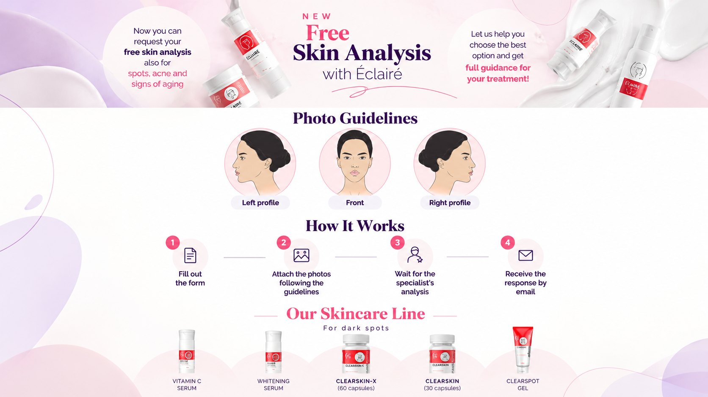
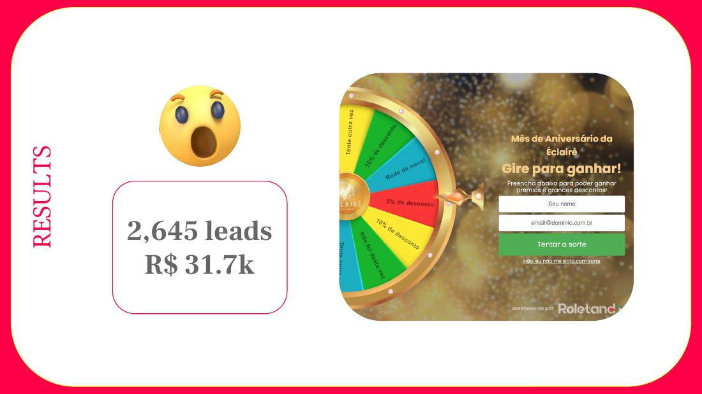
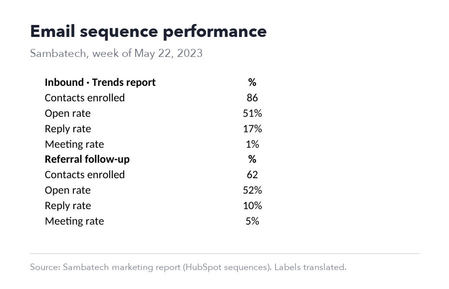

Marina Scheffer · Funnel research & development
Find the leak. Test one thing. Turn the winner into a template.
Funnels I've optimized across Meta, opt-in pages and follow-up, with my role, what I changed and the before and after. Then how I'd run the testing system for your client accounts.
Open: "The line in your post I liked most was don't declare winners prematurely. Most funnel testing I've audited failed there, not in the ideas. I'm Marina, in Brazil, 10+ years building acquisition funnels. I'm the person who writes the copy, builds the automation, and reads the data to decide what to test next."
Your KPIs, my numbers
The metrics you'll measure me on, from real funnels
Opt-in37.8%click to lead on the best Meta ad, real estate education
Opt-in page212 → 2,827free analysis requests in 4 months, skincare clinic
Cost per lead$25.77 → $7.02Aug to Oct, in a month CPM rose 85%
Follow-up89% vs 28%webinar show-up, nurtured list vs cold ads
01 · Opt-in conversion
More of the right visitors become leads

US real estate education · Meta + instant form · Aug to Oct 2026
Four ads, each with one job
Before$25.77 / lead
After$7.02 / lead
- Role: media buying, copy, form, follow-up
- Tested: angle per ad (story, objection, numbers, W-2 earner)
- Won: objection ad, 37.8% click to lead at $6.14
- Quality: 39 of 40 left a phone, 21 of 40 "within 3 months"
"CPM went up 85% in October and CPL barely moved, because CTR went from 7.7% to 11.8%. The copy absorbed the cost. And I added one qualifier question so the follow-up knows who to call first."

Skincare clinic · opt-in page · 4 months
A free analysis as the entry offer
Before212 requests
After2,827 requests
- Role: owned growth: offer, page, ads, follow-up
- Tested: the offer itself, then format, CTA and hook by tag
- Method: monthly best vs worst, next ideas scored before running
"The biggest lift wasn't a headline, it was changing the offer: from 'buy a treatment' to 'get a free analysis'. Lower commitment, and the analysis itself sells the treatment."

Same clinic · anniversary campaign
A gamified opt-in: spin to win
Leads2,645
RevenueR$31.7k
- Name + email to spin, prizes as discount tiers
- Every lead tagged by prize, so follow-up matched the discount they won
"Opt-in tests aren't only copy. Sometimes it's the mechanic. Here the form became a game, and the follow-up was segmented by the prize each person won."
02 · Traffic quality & tracking
Meta was buying clicks. I made it buy registrations.

Small business education · webinar funnel · 30 days
Fixed the tracking, then the optimization event
Before$451 · 0 tracked regs
After8 → 34 regs · $13.91
- Found: a Traffic campaign with 1,603 page views and no registration event firing
- Changed: registration event validated, campaign moved to Conversions
- Result: 15 attended against a target of 10
"Before I test anything, I check the tracking. Here $451 had gone to clicks with zero tracked registrations. You can't A/B test on numbers you don't trust."
Ad to page to message, one promise. The ad's hook, the page headline and the first follow-up message say the same thing in the same words. When CTR is high and opt-in is low, the break is almost always there.
03 · Follow-up that converts · GoHighLevel
Where most of the money is made after the opt-in
4 GHL accounts I've managed
- Real estate education: Meta instant form → pipeline, call queue, email nurture
- Credit repair agency: intake, document collection, follow-up until the file is complete
- Management consulting: webinar registration, reminders, show-up flows
- AI consulting (B2B): outbound and referral sequences
Workflows, triggers, tags, segmentation, pipeline stages, conversion events back to Meta.
Referral follow-up sequence · 62 contacts

Opt-in→Instant SMS + email→Tag by answer→Branch on open / click→Offer deadline→Purchase = exit
"In the webinar funnel the nurtured list showed up at 89%, cold ads at 28%. That told us the next tests belonged in follow-up, not more traffic. The things I'd test in your workflows: first-message delay, frequency, sequence length and deadline, one at a time." Full playbook: ghl.html
If he asks "what broke?": phone numbers saved without country code, so the dialer and SMS couldn't reach them. And lead alerts stopped when the Meta token expired. Both are on my launch checklist now.
04 · Offers & upsell
Test the offer, judge it on revenue per lead
Scarcity offer, 3 months running
"First 100 to tag a friend get 50% off." Revenue on it grew every month it ran:
Month 1US$1.2k
Month 3US$2.2k
How I'd test your upsell page
- Offer: what's in it, bonus vs discount
- Price: anchor, payment plan, one-click
- Presentation: video vs text, order of proof
- Flow: upsell on thank-you page vs in follow-up
If he asks for upsell take rates: "My upsell work was offer-level, like this scarcity offer. I won't give you a take rate I can't back. What I'd bring is the discipline: one variable at a time, and a higher take rate that lowers revenue per lead doesn't count as a win."
05 · The testing system
A roadmap anyone on the team can read
| Test | Hypothesis | Metric | Call it when | Status |
|---|---|---|---|---|
| Opt-in headline | Naming the outcome beats naming the product | Opt-in rate | 100 opt-ins per variant + 7 days | Running |
| First SMS delay | Instant beats 10 min for booked calls | Booked within 48 h | 200 leads per arm | Queued |
| Upsell deadline | 48 h deadline lifts purchases without refunds | Revenue per lead | Full 2 cycles | Queued |
| Form qualifier | One timing question improves lead quality | % "within 3 months" | Done | Won → template |
- Sample size set before launchDecided up front, so nobody calls it on day two.
- One variable at a timeOtherwise a win teaches you nothing.
- Full weeks onlyWeekday vs weekend traffic behaves differently.
- Revenue is the tiebreakerOpt-in up but revenue per lead down is not a win.
Winning test→Funnel template→GHL snapshot→SOP→Deploy checklist→Next client, day one
"Each win gets documented the same day: what changed, the numbers, the screenshot. Then it becomes a template and a checklist, so the next account starts from the winner, not from zero."
06 · First 30 days
What you'd get from me, week by week
Week 1Audit & tracking
Read the KPIs per step, validate pixel, events and GHL conversion data. List the biggest drop-off.
Week 2Roadmap & first tests
Hypotheses scored by impact and effort. First opt-in test and first workflow timing test live.
Weeks 3 to 4Results & templates
Read what's ready, document it, turn the first winner into a template and SOP.
Only you see this · hours & money
The "to be determined" hours
Ask first: "The post says hours to be determined. How many hours a month do you picture for this, at least at the start?"
If he turns it back to you: "I'd start at 60 to 80 hours a month, about 15 to 20 a week, on a set schedule. The first month is audit, roadmap and the first tests. Once the template system is built we'll know if it needs more." At $30/h that's $1,800 to $2,400 a month.
If he wants more (30+ h/week): "I can grow into that. Let's start at 20 for the first month and review together after the first results." Contract-to-hire: "I'm open to it, I'd like the first month to show you the fit." Don't mention other clients' hours.
Ask him: 1) How many client accounts run this funnel today, and is it the same funnel in all? 2) What are opt-in and upsell rates now? 3) Who builds pages, me or a designer? 4) Who owns the ad accounts, do I buy media or advise? 5) What does a great first 90 days look like for you?